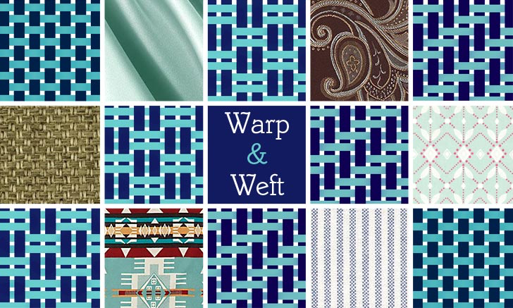
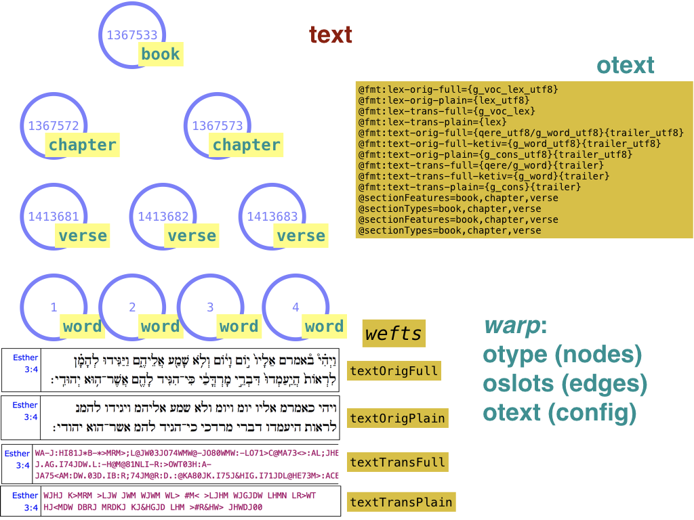

Module tf.about.datamodel
Text-Fabric Data Model
Everything about us, everything around us, everything we know and can know of is composed ultimately of patterns of nothing; that’s the bottom line, the final truth. So where we find we have any control over those patterns, why not make the most elegant ones, the most enjoyable and good ones, in our own terms?
– Iain M. Banks. Consider Phlebas: A Culture Novel (Culture series)
… of days that are no more, but which run on like a warp to which the future weaves its weft.
– Alastair McIntosh. Poacher's Pilgrimage: Introduction to a Gaelic evening prayer
At a glance
Take a text, put a grid around the words, and then leave out the words. What is left, are the textual positions, or slots.

Pieces of text correspond to phrases, clauses, sentences, verses, chapters, books. Draw circles around those pieces, and then leave out their contents. What is left, are the textual objects, or nodes.

Nodes can be connected to other nodes by edges. A basic function of edges is to indicate containment: this node corresponds to a set of slots that is contained in the slots of that node. But edges can also denote more abstract, linguistic relations between nodes.
Nodes have types. Types are just a label that we use to make distinctions between word nodes, phrase nodes, …, book nodes. The type assignment is an example of a feature of nodes: a mapping that assigns a piece of information to each node. This type assignment has a name: otype, and every Text-Fabric dataset has such a feature.
Nodes may be linked to textual positions or slots. Some nodes are linked to a single slot, others to a set of slots, and yet others to no slots at all.
Nodes of the first kind are identified with their slots, they have the same number as slot as they have as node.
Nodes of the second kind have an edge to every slot (which is also a node) that they are linked to. The collection of these edges from nodes of the second kind to nodes of the first kind, is an example of a feature of edges: a mapping that assigns to each pair of nodes a boolean value: is this pair a link or not? This particular edge feature is called oslots, and every Text-Fabric dataset has such a feature.
Nodes of the third kind represent information that is not part of the main body of text. We could represent the lexicon in this way. However, it is also possible to consider lexeme as a node type, where every lexeme node is linked to the set of slots that have an occurrence of that lexeme.
Fabric metaphor
 AD 1425 Hausbücher der Nürnberger Zwölfbrüderstiftungen
AD 1425 Hausbücher der Nürnberger Zwölfbrüderstiftungen
Before we go on, we invite you to look at a few basic terms in the craft of weaving.
A weaver sets up a set of fixed, parallel threads, the warp. He then picks a thread, usually a colourful one, and sends it in a perpendicular way through the warp. This thread is called the weft.

The instrument that carries the wefts through the warp is called the loom. The weaver continues operating the loom, back and forth, occasionally selecting new wefts, until he has completed a rectangular piece of fabric, the weave.
 source
Now Text-Fabric, the tool, can be seen as the loom that sends features (the wefts) through a warp (the system of nodes and edges).
The features otype and oslots are the ones that set up the system of nodes and edges. That's why we call them warp features. Every Text-Fabric dataset contains these two warp features. (Later on we'll see a third member of the warp, otext). They provide the structure of a text and its annotations, without any content. Even the text itself is left out!

All other information is added to the warp as features (the wefts): node features and edge features. A feature is a special aspect of the textual information, isolated as a kind of module. It is a collection of values which can be woven as a weft into the warp.
One of the more basic things to add to the warp is the text itself. Ancient texts often have several text representations, like original (Unicode) characters or transliterated characters, with or without the complete set of diacritical marks. In Text-Fabric we do not have to choose between them: we can package each representation into a feature, and add it to the fabric.
A Text-Fabric data set is a warp (otype, oslots) plus a collection of wefts (all other features). We may add other features to the same warp. Data sets with only wefts, but no warps, are called modules. When you use modules with a dataset, the modules must have been constructed around the warp of the dataset.
Whenever you use Text-Fabric to generate new data, you are weaving a weave. The resulting dataset is a tight fabric of individual features (wefts), whose values are taken for a set of nodes (warp).

Some features deserve a privileged place. After all, we are dealing with text, so we need a bit of information about which features carry textual representations and sectioning information (e.g. books, chapters, verses).
This information is not hard-wired into Text-Fabric, but it is given in the form of a config feature. A config feature has no data, only metadata. Every Text-Fabric dataset may contain a config feature called otext, which specifies which node types and features correspond to sectional units such as books, chapters, and verses. It also contains templates for generating text representations for the slots.
The otext feature is optional, because not all Text-Fabric datasets are expected to have extensive sectioning and text representation definitions. Especially when you are in the process of converting a data source (such as a treebanks set) into a Text-Fabric dataset, it is handy that Text-Fabric can load the data without bothering about these matters.

Model
We summarize in brief statements our data model, including ways to represent the data, serialize it, and compute with it.
Text objects:
- occupy arbitrary compositions of slots;
- carry a type (just a label); all slots carry the same type, the slot type; e.g. word or character;
- can be annotated by features (key-value pairs)
- can be connected by directed, labelled links to other text objects.
The model knows which feature assigned values to nodes and edges. If two different features assign a value to an edge or node, both values can be read off later; one through the one feature, and one through the other.
The data in Text-Fabric is organized as an annotated directed graph with a bit of additional structure. The correspondence is
- text positions => the first so many slot numbers
- text objects => nodes
- links between text objects => edges
- information associated with text objects => node features
- labels on links between text objects => edge features
- NB: since every link is specified by an edge feature, every link is implicitly labelled by the name of the edge feature. If the edge feature assigns values to edges, those values come on top of the implicit label.
- types of text objects => a special node feature called
otype(read: object type) - extent of text objects in terms of slots => a special edge feature called
oslots(read: object slots) - optional specifications for sectioning and representing text => a special
config feature called
otext(read: object text)
Together, the otype, oslots, and the optional otext features are called
the warp of a Text-Fabric dataset.
Representation
We represent the elements that make up such a graph as follows:
- nodes are integers, starting with 1, without gaps;
- the first
maxSlotnodes correspond exactly with the slots, in the same order, wheremaxSlotis the number of slots; - nodes greater than
maxSlotcorrespond to general text objects; - node features are mappings of integers to values;
- edge features are mappings of pairs of integers to values; i.e. edges are ordered pairs of integers; labelled edges are ordered tuples of two nodes and a value;
- values (for nodes and for edges) are strings (Unicode, utf8) or numbers;
- the
otypefeature maps- the integers
1..maxSlot(including) to the slot type, wheremaxSlotis the last slot, - the integers
maxSlot+1..maxNode(including) to the relevant text object types;
- the integers
- the
oslotsfeature is an valueless edge feature, mapping all non-slot nodes to sets of slots; so there is anoslotsedge between each non-slot node and each slot contained by that node; - a Text-Fabric dataset is a collection of node features and edge features
containing at least the warp features
otype,oslots, and, optionallyotext.
More about the warp
The warp/weft distinction is a handy way of separating textual organisation from textual content. Let us discuss the warp features a bit more.
otype: node feature
Maps each node to a label. The label typically is the kind of object that the node represents, with values such as
book
chapter
verse
sentence
clause
phrase
word
There is a special kind of object type, the slot type, which is the atomic
building block of the text objects. It is assumed that the complete text is
built from a sequence of slots, from slot 1 till slot maxSlot (including),
where the slots are numbered consecutively. There must be at least one slot.
All other objects are defined with respect to the slots they contain.
The slot type does not have to be called slot literally. If your basic
entity is word, you may also call it word. Slots are then filled with
words. You can model text on the basis of another atomic entity, such as
character. In that case, slots are filled with characters. Other choices may
be equally viable.
The only requirement is that all slots correspond exactly with the first so many nodes.
The otype feature will map node 1 to a node type, and this node type is the
type of all subsequent slots and also of the things that fill the slots.
Note also the sectional features book chapter verse here. They will play a
role in the third, optional, warp feature otext.
oslots: edge feature
Defines which slots are occupied by which objects. It does so by specifying edges from nodes to the slots they contain.
From the information in oslots we can compute the embedding relationships
between all nodes.
It gives also rise to a canonical ordering of nodes, see tf.core.nodes.
otext: config feature (optional)
Declares which node types correspond to the first three levels of sectioning, usually book, chapter, verse. Also declares the corresponding features to get the names or numbers of the sections in those levels. Text-Fabric uses this information to construct the so-called Text-API, with functions to
- convert nodes to section labels and vice versa,
- represent section names in multiple languages,
- print formatted text for node sets.
If information about sections or text representations are missing, Text-Fabric will build a reduced Text-API for you, but it will continue.
Serializing and precomputing
When Text-Fabric works with a dataset, it reads feature data files, and offers an API to process that data. The main task of Text-Fabric is to make processing efficient, so that it can be done in interactive ways, such as in a Jupyter notebook. To that end, Text-Fabric
- optimizes feature data after reading it for the first time and stores it in binary form for fast loading in next invocations;
- precomputes additional data from the warp features in order to provide convenient API functions.
In Text-Fabric, we have various ways of encoding this model:
- as plain text in
.tffeature files, - as Python data structures in memory,
- as compressed serializations of the same data structures inside
.tfxfiles in.tfcache directories.
Expand source code Browse git
"""
.. include:: ../docs/about/datamodel.md
"""